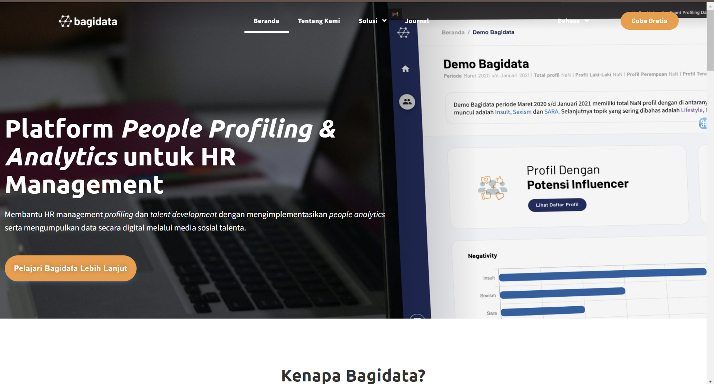
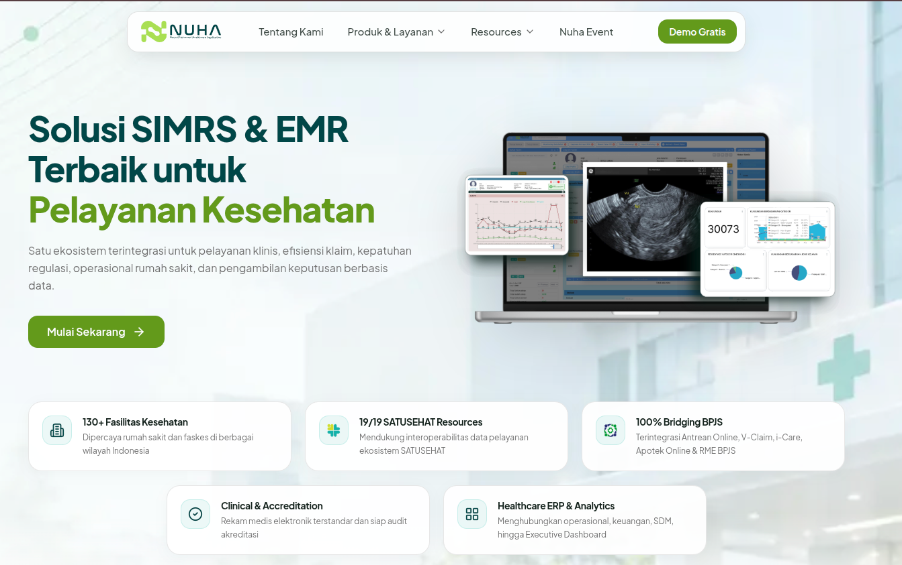

Backend Engineer with 7+ years of experience building APIs and microservices with Node.js, PostgreSQL and Docker. I currently develop and maintain a hospital information system (SIMRS/EMR) used by 100+ hospitals in Indonesia, working mainly on the Billing/Finance and Warehouse modules and bringing the codebase in line with security standards. Previously I built an employee profiling platform for HR and recruiters, using Kafka, RabbitMQ and Redis for asynchronous analysis requests. I also mentor junior developers and interns.
Built microservices for Bagidata's employee profiling platform, which serves social-media-based analysis to HR and recruiters at dozens of companies.
Acquired and processed data from social media profiles and posts for analytics.
Develop and maintain the SIMRS V3 hospital information system backend, used by 100+ hospitals in Indonesia.
Bagidata adalah platform people analytics yang menyediakan berbagai solusi analisa data bagi HR Management. Dalam proses ini, Bagidata mendapatkan gambaran lengkap perilaku dan potensi kandidat serta karyawan dari lingkup media sosial. Analisa yang dikelola dari Big Data ini bermanfaat untuk melengkapi data internal, mengambil keputusan berbasis data, serta mematangkan strategi HR Management untuk inovasi dan transformasi digital perusahaan.
Details
NUHA builds a hospital information system (SIMRS), Electronic Medical Record (EMR) and mobile apps used by 100+ hospitals in Indonesia. I work on the backend team, mainly on the Billing/Finance and Warehouse modules, and helped patch security vulnerabilities in legacy code without changing business logic.
Details